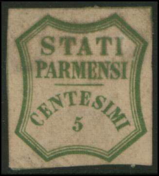
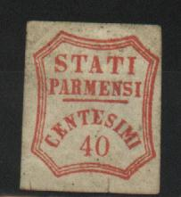
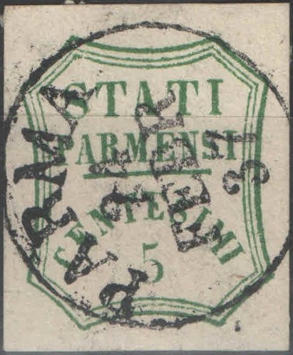
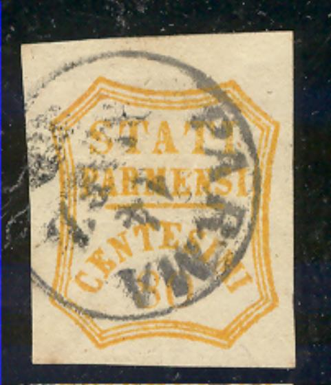
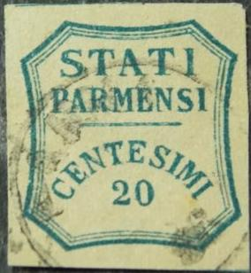
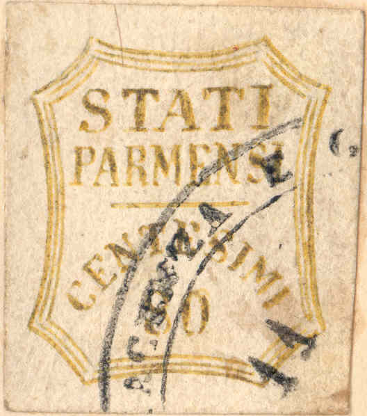
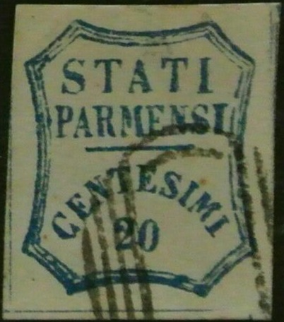

Also note the closed '4' in the 40 c value.
Return To Catalogue - Parma 1859 issue, part 1 - Parma 1859 issue, Fournier forgeries - Parma 1852 issue - Parma 1857 issue - Italy
Note: on my website many of the
pictures can not be seen! They are of course present in the
catalogue;
contact me if you want to purchase the catalogue.
In the next forgeries, the "C" of "CENTESIMI" is almost touching the frame line. The outer framline is very thick.

Also note the closed '4' in the 40 c value.
Two other forgeries, also with the "C" very close to the left border frameline:

The 5 c forgery 'enhanced' by scratching out the top part of the
"I" of "STATI" and applying a forged cancel.
More forgeries:


Two other forgeries, apparently made by the same forger:
I have seen many 'modern' forgeries often offered on Internet auctions (2005). They are generally printed on very white paper. The shown breaks and errors are identical in all the stamps for one value and thus serve as a means to identify them. Usually they are uncancelled, though I have seen them with cancel (see next image of the 40 c). Of the 40 c shown below two colours exist: red and orange. The 5 c also exists in two colours: light and dark green (not shown). Click here for mor information on these Italian States modern forgeries.


Modern forgeries of the 10 c and 40 c

Modern forgery of the 5 c. This forgery exists in the colors dark
green and light green.
Another set of forgeries:








I've seen these forgeries being offered in whole sheets of 100 stamps (10 rows of 10 stamps), with border inscription "=== GOVERNO PROVVISORIO DI PARMA ===" at all four sides. I've seen them cancelled, for example the 5 c with lozenge with lines or with the above "FRANCOBOLLO INSUFFICIENTE" cancel. Other cancels exists such as "POMPU 27 GEN. 61" (a town in Sardinia?). Two subtypes seem to exist, the second "E" of "CENTESIMI" exists with its top almost touching the "T" in front of it, or with a larger space in between these two letters, they exist printed side by side, see for example the block of 9 c forgeries above. Also note the strange cancel "PARMA 24 FEBR 37", or "MODENA 8 NOV 59" (with inverted "N"). I've also seen these forgeries pasted on letters.
Again a set of forgeries, all made by the same forger, a few of them with cancel "PARMA 14 MARZ":


Rather well done forgeries again with the forged "PARMA 14
MARZ 58" cancel. The basic stamps are the modern forgeries
shown eariler. Click here for mor
information on these Italian States modern forgeries



Forgeries in a different type, but with the same "PARMA 14
MARZ 58" cancel, possibly a product of Oneglia?

Similar forgery, but with "SIENA 10 NOV 56" cancel
Same type of forgery, but with cross cancel
Different type forgery? But with the "PARMA 14 MARZ"
cancel.
Three forgeries with the second "E" of
"CENTESIMI" much larger than the "S"

20 c forgeries, "A" of "STATI" slanting
backwards and second "E" of "CENTESIMI" as
well.

Forgeries cancelled with a very wide circle with "PARMA DIC
18 ..." in the center.


A forgery with "MONROVA LIBERIA" cancel ans another
forgery made by the same forger.


Forgeries with a very thick line below "PARMENSI". One
of them has a "VF" forged cancel
that can be found on forgeries of many other countries.
All the stamps below are probably forgeries also (note especially the value numbers, which are often different from the genuine stamps):


(Note the strange cancel)

Forgery(?) with very broad "A" of "STATI",
image obtained thanks to Mark Toft


The 40 c stamp at the right hand side was offered as genuine on
Ebay (2006); the seller was conviced that it was a 'second'
printing of the 40 c. Nevertheless, all the lettering is
different and the seller did not have a certificate of
genuineness. Note that the other stamps were probably made by the
same forger. The paper seems to be rather identical to the paper
of the genuine stamps. In all the above forgeries, the
"T" of "CENTESIMI" is non-symmetric and the
second "E" of this word has the bottom limb much
broader than the top limb.



This forgery has a typical 'Spiro' cancel, yet is different from
a Spiro forgery.
Some forgeries with a 'cross' cancel:


{kind=link}
{kind=link}
{kind=link}
{kind=link}
{kind=link}
{kind=link}
{kind=link}
{kind=link}